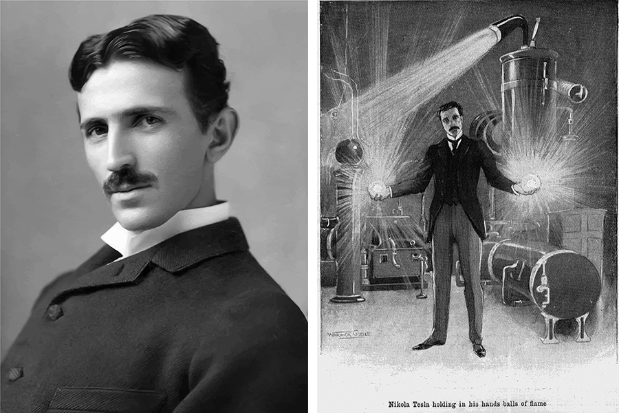

Croatia: officially the Republic of Croatia is a country at the crossroads of Central and Southeast Europe, on the Adriatic Sea.

Dubrovnik
Dubrovnik is a city in southern Croatia fronting the Adriatic Sea. It's known for its distinctive Old Town, encircled with massive stone walls completed in the 16th century. Its well-preserved buildings range from baroque St. Blaise Church to Renaissance Sponza Palace and Gothic Rector’s Palace, now a history museum. Paved with limestone, the pedestrianized Stradun (or Placa) is lined with shops and restaurants.

Pula
Pula, a seafront city on the tip of Croatia’s Istrian Peninsula, is known for its protected harbor, beach-lined coast and Roman ruins. Settled in the prehistoric era and valued for its strategic location, Pula has been occupied, destroyed and rebuilt numerous times. The Romans, Ostrogoths and Venetians, as well as the Allied Forces in World War II, have each administered the city.
Plitvice Lakes National Park
Plitvice Lakes National Park is one of the oldest and largest national parks in Croatia. In 1979, Plitvice Lakes National Park was added to the UNESCO World Heritage register. The national park was founded in 1949 and is in the mountainous karst area of central Croatia, at the border to Bosnia and Herzegovina.

Golden Horn
The Zlatni Rat, often referred to as the Golden Cape or Golden Horn, is a spit of land located about 2 kilometres west from the harbour town of Bol on the southern coast of the Croatian island of Brač, in the region of Dalmatia.
Nikola Tesla
Nikola Tesla (/ˈtɛslə/; Serbian Cyrillic: Никола Тесла; pronounced [nǐkola têsla]; 10 July 1856 – 7 January 1943) was a Serbian-American inventor, electrical engineer, mechanical engineer, and futurist best known for his contributions to the design of the modern alternating current (AC) electricity supply system. Place of birth: Smiljan, Austrian Empire (modern-day Croatia) 10 July 1856. Date of death: 7 January 1943 (aged 86) New York City, United States.

Ruđer Bošković
Roger Joseph Boscovich was a physicist, astronomer, mathematician, philosopher, diplomat, poet, theologian, Jesuit priest, and a polymath from the Republic of Ragusa. He studied and lived in Italy and France where he also published many of his works.